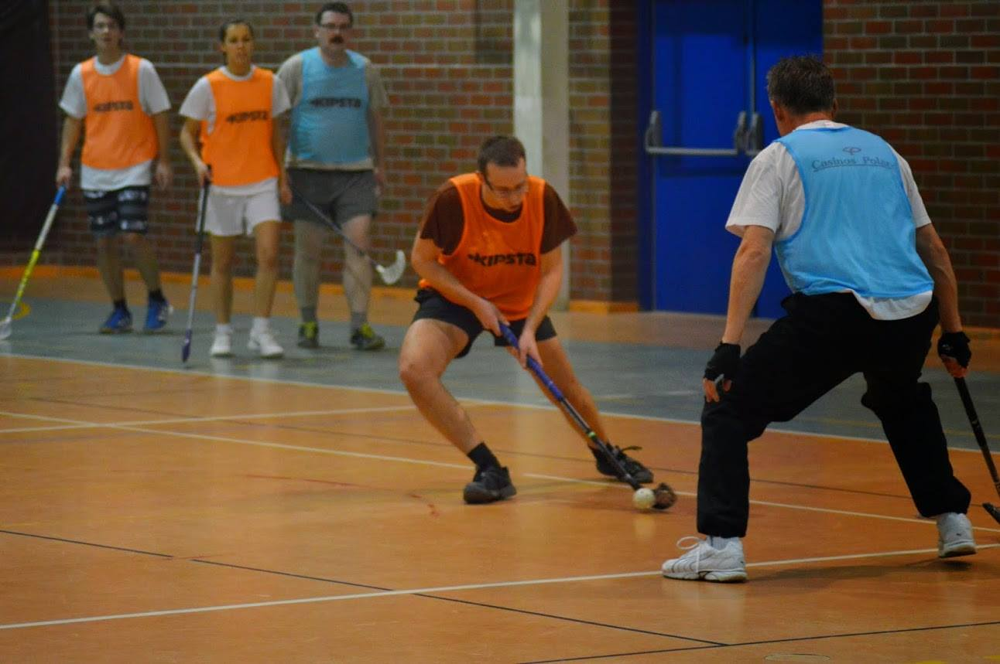

Personal Information
I am very sporty girl and one of the most favourite activities I like to do as a hobby is:
 FLOORBALL
FLOORBALL
Floorball is the kind of hokey without the ice. I have been playing this game since 2013 and at the beginning there were 2 girls in the team, including me. Now sometimes there is even 50% of women in group. I am still learning but now I can see that this game gave me a lot of experience, how to work in team and that I can`t misjudge the opponent.
Foot orienteering is time racing sport, where the participansts are expected to find the control points ,on the specific area, which have been shown on the given map. The most exciting element of that is the End of the route, when I know that it is possible to defeat my own weakness. It also allowed me to loos almost 5 kg.